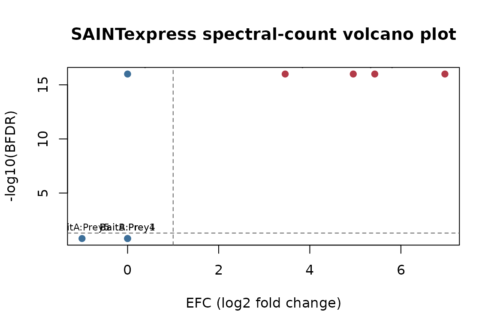
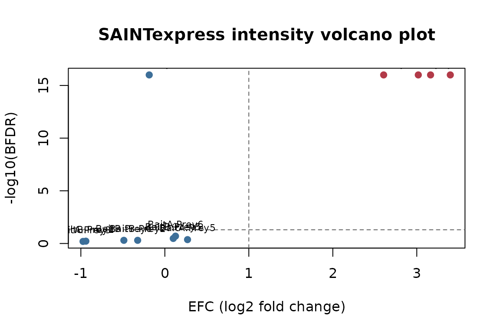

Scoring simulated SAINT input with the pure-R engine
Source:vignettes/saintexpress.Rmd
saintexpress.RmdThis vignette walks through scoring a simulated affinity-purification
experiment with saintexpress::run_saint(). No native binary
is involved — everything runs in pure R.
Simulate a small AP-MS experiment
We define two real baits (BaitA, BaitB)
with two replicates each, plus two controls. Six preys exist;
BaitA enriches for Prey1/Prey2
and BaitB for Prey3/Prey4. The
remaining preys are background.
simulate_si <- function(seed = 42, mode = c("spc", "int")) {
mode <- match.arg(mode)
set.seed(seed)
preys <- paste0("Prey", 1:6)
baits <- c("BaitA", "BaitA", "BaitB", "BaitB", "Ctrl1", "Ctrl2")
ips <- paste0("IP", seq_along(baits))
cort <- c("T", "T", "T", "T", "C", "C")
# One row per IP x prey; recover the bait for each IP.
grid <- expand.grid(ipId = ips, preyId = preys, stringsAsFactors = FALSE)
grid$baitId <- baits[match(grid$ipId, ips)]
# A prey is enriched ("signal") only for its true bait; everything else is background.
signal <- (grid$baitId == "BaitA" & grid$preyId %in% c("Prey1", "Prey2")) |
(grid$baitId == "BaitB" & grid$preyId %in% c("Prey3", "Prey4"))
# Draw every quantity in one vectorized call.
if (mode == "spc") {
lambda <- ifelse(signal, ifelse(grid$baitId == "BaitA", 20, 15), 0.5)
grid$quant <- stats::rpois(nrow(grid), lambda)
} else {
mu <- ifelse(signal, ifelse(grid$baitId == "BaitA", 1e7, 5e6), 1e4)
grid$quant <- stats::rexp(nrow(grid), 1 / mu)
}
inter <- grid[grid$quant > 0, c("ipId", "baitId", "preyId", "quant")]
rownames(inter) <- NULL
list(
inter = inter,
prey = data.frame(preyId = preys, preyLength = 500L, preyGeneId = preys,
stringsAsFactors = FALSE),
bait = data.frame(ipId = ips, baitId = baits, CorT = cort,
stringsAsFactors = FALSE)
)
}
si_spc <- simulate_si(mode = "spc")
str(si_spc, max.level = 2)
#> List of 3
#> $ inter:'data.frame': 19 obs. of 4 variables:
#> ..$ ipId : chr [1:19] "IP1" "IP2" "IP4" "IP6" ...
#> ..$ baitId: chr [1:19] "BaitA" "BaitA" "BaitB" "Ctrl2" ...
#> ..$ preyId: chr [1:19] "Prey1" "Prey1" "Prey1" "Prey1" ...
#> ..$ quant : int [1:19] 26 17 1 1 22 22 2 2 15 10 ...
#> $ prey :'data.frame': 6 obs. of 3 variables:
#> ..$ preyId : chr [1:6] "Prey1" "Prey2" "Prey3" "Prey4" ...
#> ..$ preyLength: int [1:6] 500 500 500 500 500 500
#> ..$ preyGeneId: chr [1:6] "Prey1" "Prey2" "Prey3" "Prey4" ...
#> $ bait :'data.frame': 6 obs. of 3 variables:
#> ..$ ipId : chr [1:6] "IP1" "IP2" "IP3" "IP4" ...
#> ..$ baitId: chr [1:6] "BaitA" "BaitA" "BaitB" "BaitB" ...
#> ..$ CorT : chr [1:6] "T" "T" "T" "T" ...Validate the input tables
saintexpress::validate_saint_input(si_spc)Spectral-count scoring
scores_spc <- saintexpress::run_saint(si_spc, mode = "spc", optimizer = "base")
scores_spc[, c("Bait", "Prey", "AvgP", "BFDR", "SaintScore")]
#> Bait Prey AvgP BFDR SaintScore
#> 1 BaitA Prey1 1.00 0.00 1.00
#> 2 BaitB Prey1 0.00 0.16 0.00
#> 3 BaitA Prey2 1.00 0.00 1.00
#> 4 BaitB Prey3 1.00 0.00 1.00
#> 5 BaitA Prey4 0.00 0.16 0.00
#> 6 BaitB Prey4 1.00 0.00 1.00
#> 7 BaitA Prey5 0.00 0.16 0.00
#> 8 BaitB Prey6 0.22 0.00 0.22The true interactors (Prey1/Prey2 for
BaitA, Prey3/Prey4 for
BaitB) should land at the top of each bait by
AvgP:
top_per_bait <- function(df) {
df <- df[order(df$Bait, -df$AvgP), ]
do.call(rbind, by(df, df$Bait, head, 2))
}
top_per_bait(scores_spc)[, c("Bait", "Prey", "AvgP", "BFDR")]
#> Bait Prey AvgP BFDR
#> BaitA.1 BaitA Prey1 1 0
#> BaitA.3 BaitA Prey2 1 0
#> BaitB.4 BaitB Prey3 1 0
#> BaitB.6 BaitB Prey4 1 0Volcano plot
The FoldChange column summarizes enrichment over the
estimated background. We plot it as an effect-size coordinate
(EFC, here log2(FoldChange)) against the
BFDR evidence coordinate.
plot_volcano <- function(scores, title) {
volcano_data <- scores
volcano_data$EFC <- log2(volcano_data$FoldChange)
volcano_data$neg_log10_bfdr <- -log10(pmax(volcano_data$BFDR, 1e-16))
volcano_data$is_hit <- volcano_data$BFDR <= 0.05 & volcano_data$EFC >= 1
plot(
volcano_data$EFC,
volcano_data$neg_log10_bfdr,
pch = 19,
col = ifelse(volcano_data$is_hit, "#B23A48", "#3D6F99"),
xlab = "EFC (log2 fold change)",
ylab = "-log10(BFDR)",
main = title
)
abline(h = -log10(0.05), lty = 2, col = "grey40")
abline(v = 1, lty = 2, col = "grey40")
text(
volcano_data$EFC,
volcano_data$neg_log10_bfdr,
labels = paste(volcano_data$Bait, volcano_data$Prey, sep = ":"),
pos = 3,
cex = 0.7
)
}
plot_volcano(scores_spc, "SAINTexpress spectral-count volcano plot")
Intensity scoring
The same simulator, with mode = "int", produces
continuous abundances.
si_int <- simulate_si(mode = "int")
scores_int <- saintexpress::run_saint(si_int, mode = "int", optimizer = "base")
top_per_bait(scores_int)[, c("Bait", "Prey", "AvgP", "BFDR")]
#> Bait Prey AvgP BFDR
#> BaitA.1 BaitA Prey1 1 0
#> BaitA.3 BaitA Prey2 1 0
#> BaitB.6 BaitB Prey3 1 0
#> BaitB.8 BaitB Prey4 1 0
plot_volcano(scores_int, "SAINTexpress intensity volcano plot")
See also
For running the original native SAINTexpress C++ binary on the same
input, see the companion package saintexpressbin.
Session information
sessionInfo()
#> R version 4.6.0 (2026-04-24)
#> Platform: x86_64-pc-linux-gnu
#> Running under: Ubuntu 24.04.4 LTS
#>
#> Matrix products: default
#> BLAS: /usr/lib/x86_64-linux-gnu/openblas-pthread/libblas.so.3
#> LAPACK: /usr/lib/x86_64-linux-gnu/openblas-pthread/libopenblasp-r0.3.26.so; LAPACK version 3.12.0
#>
#> locale:
#> [1] LC_CTYPE=C.UTF-8 LC_NUMERIC=C LC_TIME=C.UTF-8
#> [4] LC_COLLATE=C.UTF-8 LC_MONETARY=C.UTF-8 LC_MESSAGES=C.UTF-8
#> [7] LC_PAPER=C.UTF-8 LC_NAME=C LC_ADDRESS=C
#> [10] LC_TELEPHONE=C LC_MEASUREMENT=C.UTF-8 LC_IDENTIFICATION=C
#>
#> time zone: UTC
#> tzcode source: system (glibc)
#>
#> attached base packages:
#> [1] stats graphics grDevices utils datasets methods base
#>
#> loaded via a namespace (and not attached):
#> [1] digest_0.6.39 desc_1.4.3 R6_2.6.1 fastmap_1.2.0
#> [5] xfun_0.58 saintexpress_0.0.1 cachem_1.1.0 knitr_1.51
#> [9] htmltools_0.5.9 rmarkdown_2.31 lifecycle_1.0.5 cli_3.6.6
#> [13] sass_0.4.10 pkgdown_2.2.0 textshaping_1.0.5 jquerylib_0.1.4
#> [17] systemfonts_1.3.2 compiler_4.6.0 tools_4.6.0 ragg_1.5.2
#> [21] evaluate_1.0.5 bslib_0.11.0 yaml_2.3.12 jsonlite_2.0.0
#> [25] rlang_1.2.0 fs_2.1.0